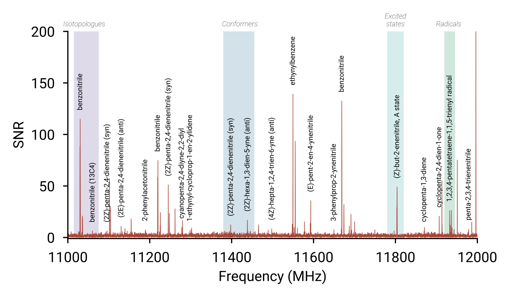
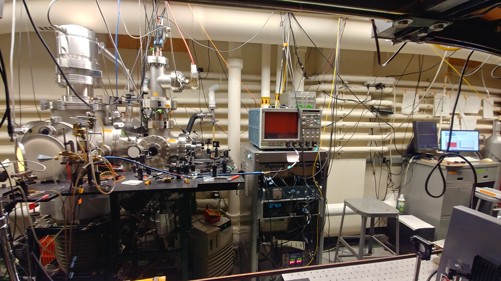
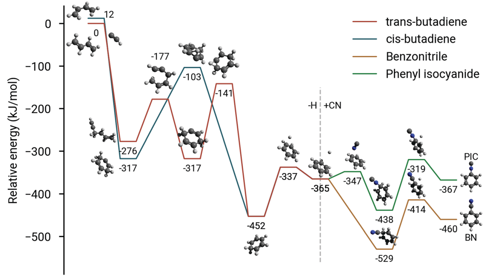
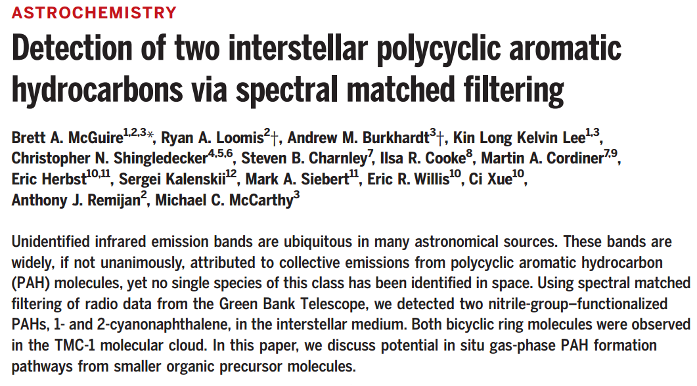
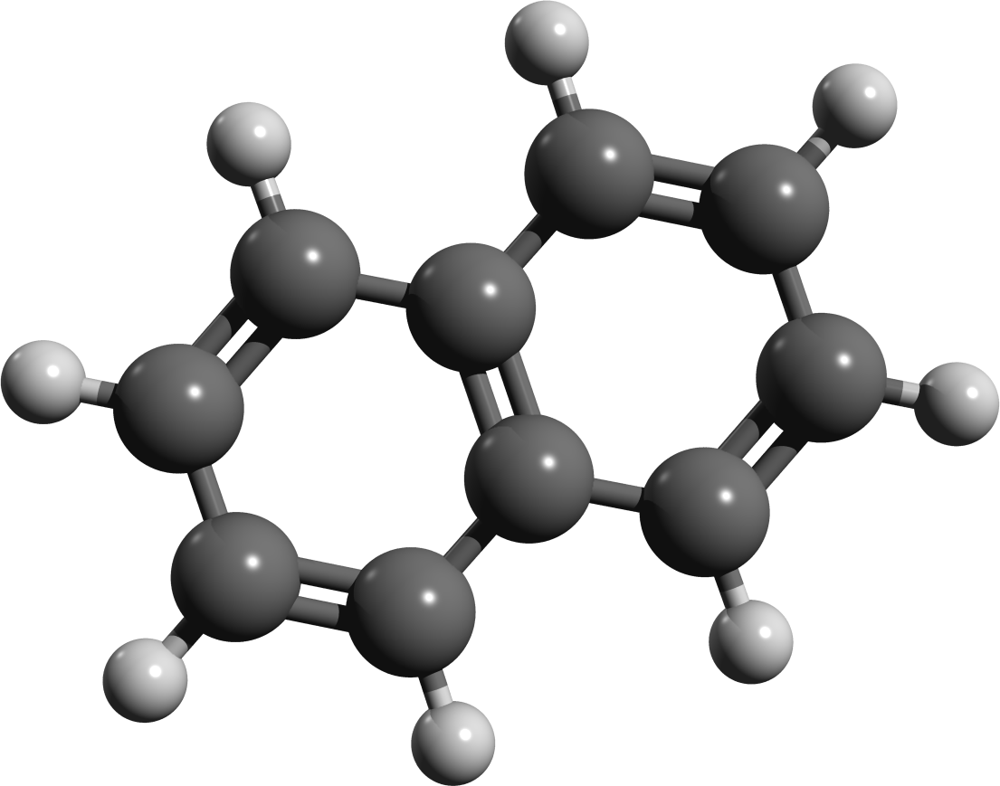

<!DOCTYPE html>
<html lang="en">
  <head>
    <meta charset="utf-8" />
    <meta name="viewport" content="width=device-width, initial-scale=1.0, maximum-scale=1.0, user-scalable=no" />

    <title>Research in the McGuire Group</title>
    <link rel="shortcut icon" href="./favicon.ico"/>
    <link rel="stylesheet" href="./dist/reveal.css" />
    <link rel="stylesheet" href="_assets/css/poster.css" id="theme" />
    <link rel="stylesheet" href="./css/highlight/solarized-light.css" />

  </head>
  <body>
    <div class="reveal">
      <div class="slides"><section  data-markdown><script type="text/template">
<!-- .slide: data-background="figures/McGuire_Group_square_logo.svg" -->

# McGuire Group

<p class="subtitle"> Who we are, and what we do <p>
</script></section><section ><section data-markdown><script type="text/template">
<h1>Group Members</h1>

<div style="display: grid; grid-template-columns: 1fr 1fr 1fr;">
    <div>
        <figure>
            
            <figcaption>PI: Brett McGuire</figcaption>
        </figure>
    </div>
    <div>
        <figure>
            
            <figcaption>Postdoc: Kelvin Lee</figcaption>
        </figure>
    </div>
    <div>
        <figure>
            
            <figcaption>Postdoc: Timothy Barnum</figcaption>
        </figure>
    </div>
</div>
</script></section><section data-markdown><script type="text/template">
<h1>Our Research</h1>

<div style="display: grid; grid-template-columns: 1fr 1fr">
    <div>
        <figure></figure>
        <p>Physical chemistry</p>
    </div>
    <div>
        <figure></figure>
        <p>Observational astrochemistry</p>
    </div>
</div>
</script></section></section><section ><section data-markdown><script type="text/template">
<div class="phys-head">
    <h1>
        Physical chemistry
    </h1>
</div>
</script></section><section data-markdown><script type="text/template">
<div class="showcase">
    <div>
        <h3>Laboratory spectroscopy</h3>
        <figure></figure>
    </div>
    <div style="padding-top: 150px">
        <ul>
            <li>Spectroscopy as a means to study the quantum mechanical nature of molecules.</li>
            <li>Radio/microwave spectroscopy probes rotational motions of molecules.</li>
            <li>Great way to study the nature of chemical bonding, and quirky chemistry!</li>
        </ul>
    </div>
</div>
</script></section><section data-markdown><script type="text/template">
<div class="showcase">
    <div>
        <h3>Gas-phase reaction screening</h3>
        <figure></figure>
    </div>
    <div>
        <ul>
            <li>Finding pathways to molecules of astrochemical and combustion interest.</li>
            <li>Fast and sensitive chemical assays: we can detect radicals, isotopologues, vibrationally excited states!</li>
            <li>Look for molecules in space!</li>
        </ul>
        <figure></figure>
    </div>
</div>
</script></section><section data-markdown><script type="text/template">
<div class="showcase">
    <div>
        <h3>Spectroscopic Artificial Intelligence</h3>
        <figure></figure>
    </div>
    <div>
        <ul style="padding-top: 150px">
            <li><a href="https://pubs.acs.org/doi/10.1021/acs.jpca.0c01376">Automating spectroscopic assignment and discovery with machine learning.</a></li>
            <li>Reduce weeks/months of tedious analysis to a matter of minutes!</li>
            <li>Computer models of decision making can inform our own strategies for analysis.</li>
        </ul>
    </div>
</div>
</script></section></section><section ><section data-markdown><script type="text/template">
<div class="astro-head">
    <h1>Astrochemistry</h1>
</div>
</script></section><section data-markdown><script type="text/template">
<div class="showcase">
    <div>
        <h3>Finding molecules in space</h3>
        <figure></figure>
    </div>
    <div>
        <ul style="padding-top: 150px">
            <li><a href="https://science.sciencemag.org/content/352/6292/1449">Searching for the molecular origins of life.</a></li>
            <li>Turning molecules into stars and planets!</li>
            <li>Tests of cosmology and relativity.</li>
        </ul>
    </div>
</div>
</script></section><section data-markdown><script type="text/template">
<h3>Observing in remote locations</h3>

<div style="display: grid; grid-template-columns: 1fr 1fr 1fr">
    <div>
        <figure>
            
            <figcaption><i>Green Bank, WV</i></figcaption>
        </figure>
    </div>
    <div>
        <figure>
            
            <figcaption><i>Mauna Kea, HI</i></figcaption>
        </figure>
    </div>
    <div>
        <figure>
            
            <figcaption><i>Atacama Desert, Chile</i></figcaption>
        </figure>
    </div>
</div>
</script></section><section data-markdown><script type="text/template">
<div class="showcase">
    <div>
        <figure></figure>
    </div>
    <div>
        <figure></figure>
    </div>
</div>
</script></section></section><section  data-markdown><script type="text/template">
<div>
    <figure>
        
        <figcaption>https://mcguirelab.mit.edu/</figcaption>
    </figure>
</div>
</script></section></div>
    </div>

    <script src="./dist/reveal.js"></script>

    <script src="./plugin/markdown/markdown.js"></script>
    <script src="./plugin/highlight/highlight.js"></script>
    <script src="./plugin/zoom/zoom.js"></script>
    <script src="./plugin/notes/notes.js"></script>
    <script src="./plugin/math/math.js"></script>
    <script>
      function extend() {
        var target = {};
        for (var i = 0; i < arguments.length; i++) {
          var source = arguments[i];
          for (var key in source) {
            if (source.hasOwnProperty(key)) {
              target[key] = source[key];
            }
          }
        }
        return target;
      }

      // default options to init reveal.js
      var defaultOptions = {
        controls: true,
        progress: true,
        history: true,
        center: true,
        transition: 'default', // none/fade/slide/convex/concave/zoom
        plugins: [
          RevealMarkdown,
          RevealHighlight,
          RevealZoom,
          RevealNotes,
          RevealMath
        ]
      };

      // options from URL query string
      var queryOptions = Reveal().getQueryHash() || {};

      var options = extend(defaultOptions, {"transition":"fade","transition-speed":"fast","width":"100%","height":"100%","center":true,"margin":0,"minScale":1,"maxScale":1,"controls":true,"controlsTutorial":true,"controlsLayout":"bottom-right","symbolperslideprogress":{"position":"left","align":"vertical","symbolColor":"","symbolActiveColor":""}}, queryOptions);
    </script>

    <script src="./_assets/js/menu.js"></script>
    <script src="./_assets/js/tableofcontents.js"></script>

    <script>
      Reveal.initialize(options);
    </script>
  </body>
</html>
